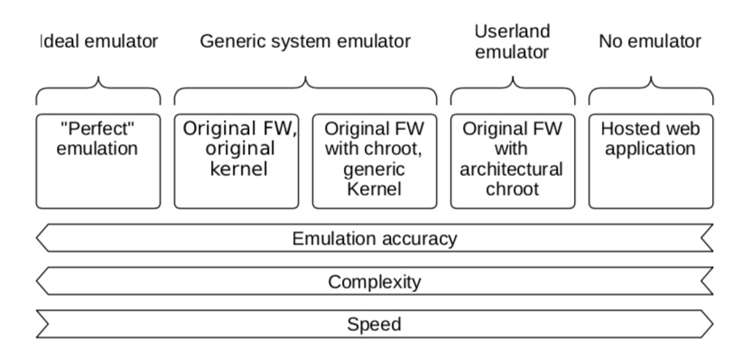
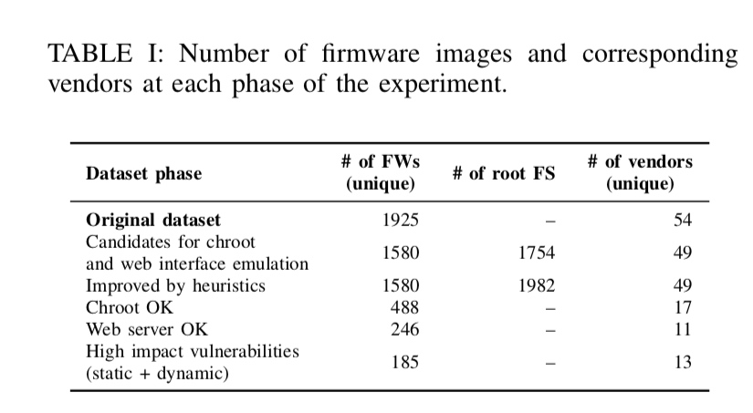

论文出处 ：AsiaCCS
时间:2016
许多嵌入式系统依靠Web界面进行用户交互或管理，因此嵌入式系统的Web界面代表了相当大的攻击面。
我们的框架执行完整的系统仿真，以在纯软件环境中实现固件映像的执行，即不涉及任何物理嵌入式设备。
I. INTRODUCTION
遗憾的是，绝大多数嵌入式Web界面使用本机CGI，绑定到本地体系结构相关工具或自定义Web服务器功能，这些功能无法在不同环境中轻松复制（第II-D1节）。
我们注意到在基于Linux的嵌入式系统中，与硬件的交互通常是从内核执行的。 此外，Web界面通常不与硬件交互，或者这种交互是间接的。
A. Overview of our Approach
我们chroot解压缩的固件并启动init程序，init脚本或有时直接启动Web服务器。一旦（如果）被测服务启动并运行3，我们就会对其进行动态分析。
B. Contributions
在本文中，我们提出了一个完全自动化的框架来执行可扩展的动态固件分 我们通过测试嵌入式Web界面的安全性来证明其有效性。 我们的框架主要依赖于固件映像的仿真。
II. EXPLORING TECHNIQUES TO ANALYZE EMBEDDED WEB INTERFACES
A. Static Analysis
B. Dynamic Analysis
C. Limitations of Analysis Tools
D. Running Web Interfaces
我们评估了不同的启动web server方法，并描述了它们的优缺点

1）非本地托管Web界面：从固件启动Web界面的简单方法是在分析环境下的Web服务器下提取然后启动它，而不尝试模拟原始Web服务器和固件。 定位Web应用程序（即，文档根目录，如部分III-B2中所述），提取并“移植”到托管环境。 该技术的主要优点是它不需要仿真，这大大简化了部署，因此易于自动化和扩展。
2）我们会针对该特定架构使用QEMU仿真器。模拟固件映像有不同的可能性，我们现在进行比较。
a）完美仿真：理想情况下，固件将完整（包括引导加载程序，内核等），并且可以使用完美模拟原始硬件的QEMU配置。 但是，QEMU仅为每个CPU架构模拟很少的平台，因此在实践中完全不能模拟未知硬件，特别是考虑到硬件设备可能是任意复杂的。 除此之外，嵌入式设备中的硬件通常是定制的，并且其文档通常不可用。 因此，不可能使仿真器适应大规模应用。
b）通用仿真器上的原始内核和文件系统：重用固件内核可以实现更准确的仿真，特别是因为它可以导出正确仿真系统所需的某些自定义设备的接口。 遗憾的是，嵌入式系统的内核通常是定制的，因此不支持各种外围设备。 因此，使用原始内核在通用仿真器上不太可能正常工作。 此外，在我们的数据集中，只有5％的固件映像包含内核，因此这种方法不可行。
c）具有通用内核和文件系统的固件chroot：缺少原始内核，可以依赖完整的通用系统（对于固件的相同CPU架构），然后将其用作分析的基础 .8从这个通用系统中，我们chroot到解压缩的固件并执行shell（例如，/ bin / sh）或init二进制文件（例如，/ sbin / init）。 最后，我们启动Web服务器的二进制文件以及Web界面文档根目录和Web配置。
理想情况下，应该可以直接引导固件文件系统。 但是，使用通用文件系统可提供一致的环境来控制虚拟机并执行我们对系统的分析和监视。 这种方法的优点是它允许在其原始文件系统结构中模拟Web界面和Web服务器软件，并且可以执行本机程序。
然而，这种方法几乎没有缺点。 首先，对系统进行仿真并不是非常快.9此外，仿真器环境设置和清理引入了重大的开销。 此外，使用这种方法，我们无法完全模拟嵌入式设备的外设和特定内核扩展。 即便如此，很少有固件映像和嵌入式Web界面的有限部分实际上与外围设备直接交互。 一个这样的示例是执行固件升级的网页，该固件升级又需要访问闪存或NVRAM存储器外围设备。
III. ANALYSIS FRAMEWORK DETAILS
A. Firmware Selection
固件选择的工作原理如下。 首先，我们选择成功解压缩的固件映像，并且是基于Linux的系统，我们可以本机模拟和chroot（参见第III-B节）。 其次，我们选择明确包含Web服务器二进制文件（例如，httpd，lighttpd）和典型配置文件（例如boa.conf，lighttpd.conf）的固件实例。 除此之外，我们还选择包含与Web界面相关的服务器端或客户端代码的固件映像（例如，HTML，JavaScript，PHP，Perl）。
B. Filesystem Preparation
在许多情况下，固件映像以不同且复杂的方式打包。例如，固件可以包含两个根文件系统，一个用于升级，一个用于工厂恢复，或者它可以与其他资源一起打包在多个存档层中。出于这些原因，我们首先需要检测根文件系统的潜在候选者。我们通过搜索关键目录（例如/ bin /，/ sbin /，/ etc /，/ usr /）和关键文件（例如/ init，/ linuxrc，/ bin / sh，/ bin / bash， / bin / dash，/ bin / busybox）。一旦我们发现相对于解压缩固件中的目录的此类文件和文件夹，我们选择该特定目录作为根文件系统点。在某些情况下，很难或无法检测根文件系统。可能的原因是某些固件更新只是部分更新，并不提供完整的系统。我们提取每个检测到的根文件系统并将其打包为独立的根文件系统，以备仿真。
1）文件系统清理：
2）Web服务器启发式：在固件中，我们放置Web服务器二进制文件及其相关配置文件（例如，boa.conf，lighttpd.conf）.11 Web服务器的路径及其配置文件足以启动 web服务器使用诸如/ bin / boa -f /etc/boa/boa.conf之类的命令（我们的数据集中的一个真实示例）。 此外，我们从配置文件（例如，文档根）中提取重要设置。
有时，我们会错过正确启动Web服务器所需的重要参数，例如文档根路径或CGI路径。 通常这是因为缺少配置文件（例如，部分固件更新）或者因为参数是通过命令行从不可用的脚本提供的。 在这些情况下，我们将试验固件的所有潜在文档根源。 为了找到潜在的文档根（在根文件系统中），我们首先搜索具有可能的文件扩展名（HTML，SHTML，PHP，ASP，CGI）的索引文件（例如，index.html，default.html）。 然后，我们构建了一组这些文件的最长公共前缀列表。 这可能导致多个文档根目录，例如，可以在恢复分区中找到第二个文档根目录。 一旦我们发现文档根，我们就会准备启动Web服务器的可能命令。 有了这个，我们增加了启动和运行Web服务器的机会。
C. Analysis Phase
D. Results Collection and Analysis
E. Results Exploitation
IV. DATASET

V. RESULTS AND CASE STUDIES
A. Summary of Discovered
Vulnerabilities
我们的自动化系统对来自54家供应商的1925固件映像内的嵌入式Web界面进行了静态和动态分析。其中246个我们能够模拟Web服务器。
B. Static Analysis Vulnerabilities
php静态代码审计
C. Dynamic Analysis Vulnerabilities
D. Evaluation of Hosting Web Interfaces
E. HTTPS and Other Network Services
F. Analysis of the Failures
各个阶段的故障限制了测试固件映像的覆盖范围。 例如，表II显示大约69％的原始固件映像的ch-root失败，并且大约50％的成功chrooted固件包无法启动嵌入式Web界面。 为了增加覆盖范围，从而增加在更多固件映像中发现更多漏洞的可能性，我们必须对故障进行分析并改进我们的框架。
a）分析：如前所述，在实验期间，我们的框架遇到了1092个chroot失败的固件映像，以及242个固件仿真，其中Web界面启动失败。 然而，这是手动分析的太多失败，并且系统的多样性使得自动日志分析具有挑战性。在这些采样日志中，我们发现了chroot故障的两个主要原因：
由于exec格式错误，Chroot因10个固件映像而失败（从1092个固件映像中推断为11.3％±6.3％）。 这些失败是CPU体系结构错误猜测或由于包含非法指令的/ bin / sh导致的结果.17我们认为这些错误情况应该相对容易修复，即通过更改QEMU架构。
其次，26个样本的chroot失败，因为固件映像只是部分固件更新（我们推断为1092的29.5％±9.1％）。
我们推断，1092个chroot失败案例的59.1％±9.8％实际上是成功的chroot。
总之，对于chroot失败的故障，我们估计62个样本应该相对容易修复，这意味着70.4％（±9.1％）的故障应该易于修复，这将使仿真更进一步。
这些文件成功地被chrooted但无法启动Web界面。我们发现了45个丢失设备导致故障的实例。缺少设备的一些例子是eth1，br0，/ dev / gpio，/ dev / mtdblock0。我们估计在仿真器中修复缺失的设备通常很难。启动init失败原因是init必须是所有其他进程的父进程，PID号必须是0.
G. Case Study: Netgear Networking Devices
xss和命令注入
H. Case Study: Samsung CCTV Cameras
VI. DISCUSSION
A. Limitations of the Emulation Techniques
虽然我们的方法能够发现在模拟环境中运行的嵌入式Web界面中的漏洞，但设置此类环境并不总是那么简单。 我们讨论了我们遇到的一些限制，并概述了将来如何处理这些限制。 事实上，许多这些限制是先前在第V-F节中分析的故障的结果。
1）强制仿真：我们通过强制调用其默认初始化脚本（例如/ etc / init，/ etc / rc）来模拟固件映像，但是，有时，这些脚本不存在或无法正确执行导致系统配置不完整。例如，它可能无法在/ etc挂载点挂载/ etc_ro分区，然后，Web服务器缺少一些必需的文件（例如，/ etc / passwd）。
2）模拟Web服务器环境：即使基本模拟成功，模拟Web服务器环境的其他问题也很常见。 例如，一个经过验证的Web界面返回许多请求HTTP响应代码500内部服务器错误或404未找到。 返回代码500时手动检查案例表明，根文件系统中缺少某些脚本或二进制文件，或者没有适当的权限。 由于加载了错误的Web服务器配置文件，经常返回代码404，这导致文档根目录指向错误的目录。 为了解决这个问题，我们尝试使用我们在此固件中找到的配置文件和文档根的所有组合来模拟固件的Web界面。
1001/5000
3）不完美的仿真：在QEMU中模拟嵌入式软件的能力非常有价值，但需要付出代价。一个很大的缺点是模拟环境中缺少一些非常基本的外围设备。非常常见的仿真失败与缺乏非易失性存储器（例如，NVRAM）有关[29,44]。嵌入式设备使用这些存储器来存储引导和配置信息。存在几种克服这些限制的方法。一种是将通用或即时NVRAM仿真器插入QEMU，例如在内核级别进行检测或使用Avatar [85]实现。另一种方法是拦截对常用libnvram函数（如nvram_get和nvram_set）的调用并返回伪数据[29,44]。虽然这些工具易于编译和使用，但在不产生错误警报或破坏仿真的情况下自动生成有意义的应用程序数据并非易事。我们计划在未来版本中集成这些技术。
B. Outdated Firmware Versions
C. Manual Interventions
D. Ethical Aspects
VII. RELATED WORK
VIII. CONCLUSION AND FUTURE WORK
在这项工作中，我们提出了一种新方法，用于对嵌入式设备中的Web界面进行大规模安全性分析。为此，我们设计了第一个实现固件可扩展和自动化动态分析的框架，这个框架是为了使用纯软件方法发现嵌入式设备中的漏洞而精心开发的。我们的框架利用现成的静态和动态分析工具。